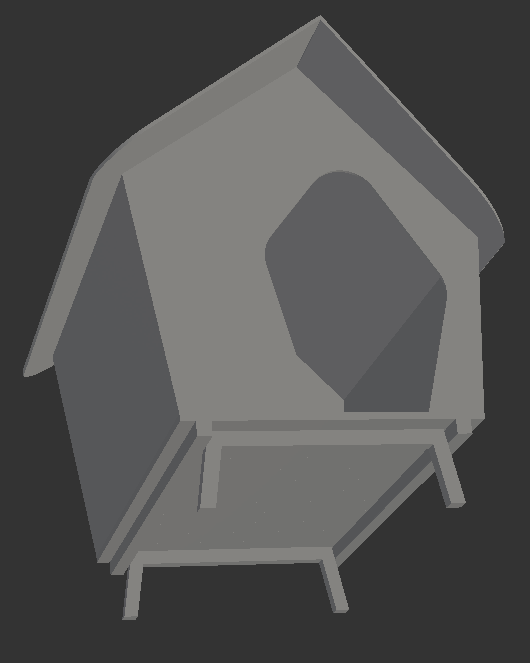
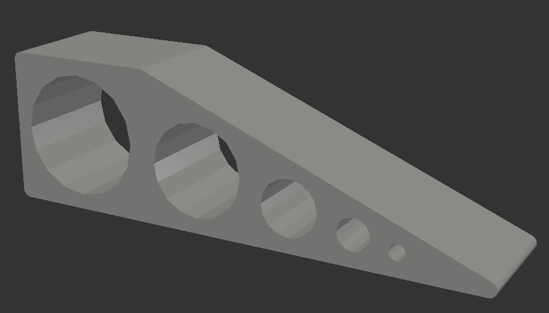
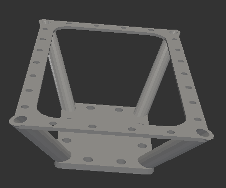
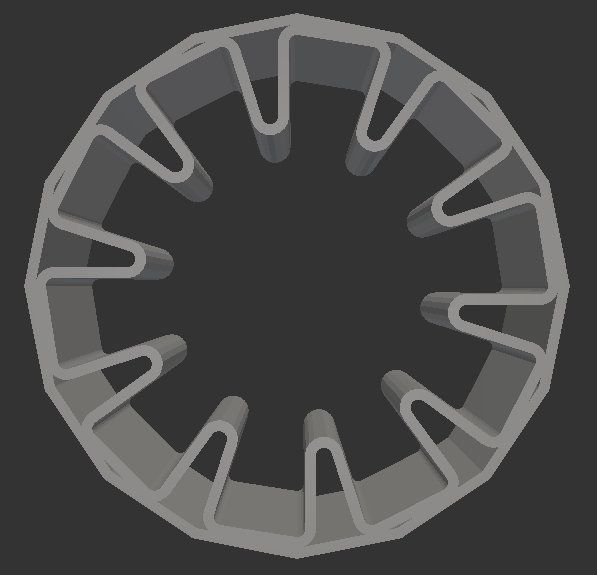
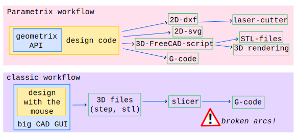
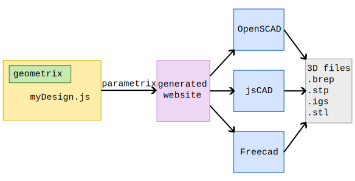
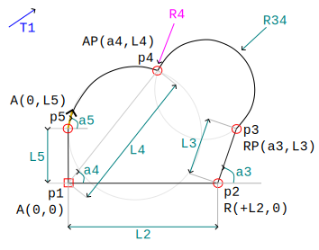

Prez of Parametrix

Parametrix
Parametrix
CAD as code for open-hardware
a JavaScript solution for creating 3D shapes
 
 
Parametrix workflow
Simplistic approach: - contour centric (i.e. 2.5D) - cost efficient manufacturing process are 2D - robust mechanisms are 2D - no long workflow chain
Generate 3D files
> a JavaScript solution for creating 3D shapes
> a frontend that abstract the CAD solution
> a generator of WebUI for parametrizing your designs
Parametrix main advantages:
1. Durability of your 3D modeling
1.1. Parametrix is small (10k LoC)
1.2. Parametrix is open-source
1.3. An abstraction of several/many API of CAD-tools
Keep your design agnostic to CAD vendors (no lock-in)
2. Guide your design for cost efficient digital manufacturing
Generate contours made out of lines and arcs of circles
as supported by G-code
3. Clear and structured interface between designer and manufacturer
one HTML page with parametrization, 2D preview and 3D export
4. A javacript API
Creating your 3D modelling recipes with javascript
Parametrix in condensed
framework / eco-system : Parametrix
core library : Geometrix
design-libraries : Designix, Desi78, Desi82, ...
Go through the design-UI
The Geometrix API for designing a 3D shape
The Geometrix API in a nutshell
Code example 
const ctr1 = contour(0, 0) .addSegStrokeR(param.L2, 0) .addSegStrokeRP(a3, param.L3) .addPointAP(a4, param.L4) .addSegArc(param.R34, true, true) .addCornerRounded(param.R4) .addPointA(0, param.L5) .addSegArc3(a5, false) .closeSegStroke();
3 types of parameters - number - checkbox (i.e. boolean) - dropdown (i.e. enum)
Create contour with: - strokes - arcs of circles Optimal for generating G-code
Next destination-point in contour-definition: - Cartesian or Polar - Relative or Absolute
3 options for defining an arc of circle: - radius with large/small and ccw/cw - intermediate point - tangent at the begining or the end
Complex curve approximation: Double arcs defined with start and end tangents
Corner rework: - Rounded - Widened - WideAcc
- Define a list of figures
- Attach the contours to figures
- as main, second or dynamics
Define the 3D shape
- Extrude figures as LinearOrtho or Rotate
- Rotate, translate and combine sub-element
- Union
- Intersection
- Substraction Parametrix generates 3D scripts for: - OpenSCAD ✔ - OpenJsCad ✔ - Freecad ✔ - SolveSpace - pythonOCC - CadQuery - OpenCascade.js - Three.js - glTF - X3D - ManifoldCAD
End of
the
presentation
of
Parametrix
Ready for creating your own design-library?
npm create parametrix@latest tom07